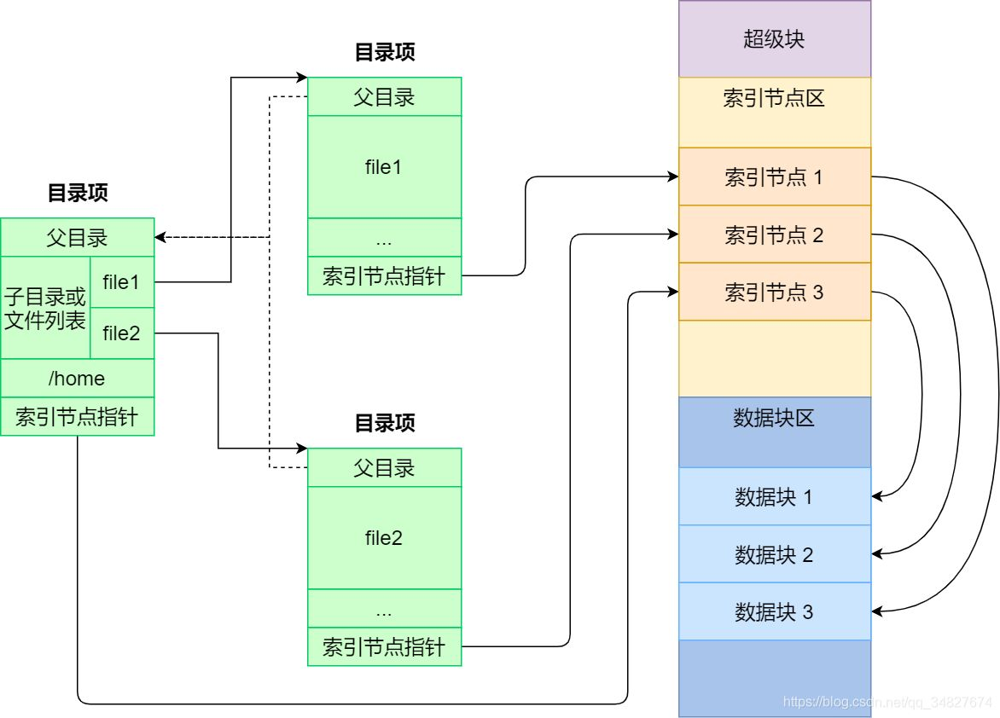
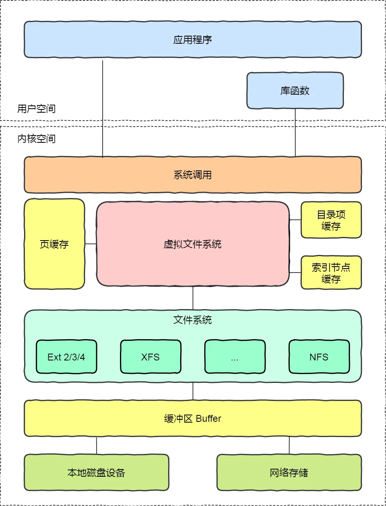
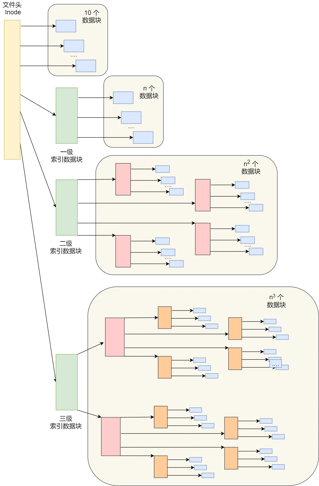
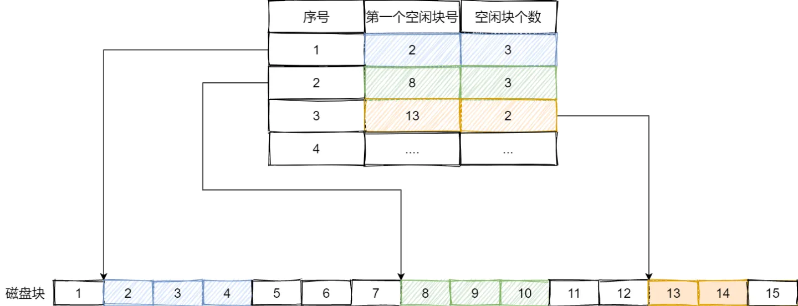
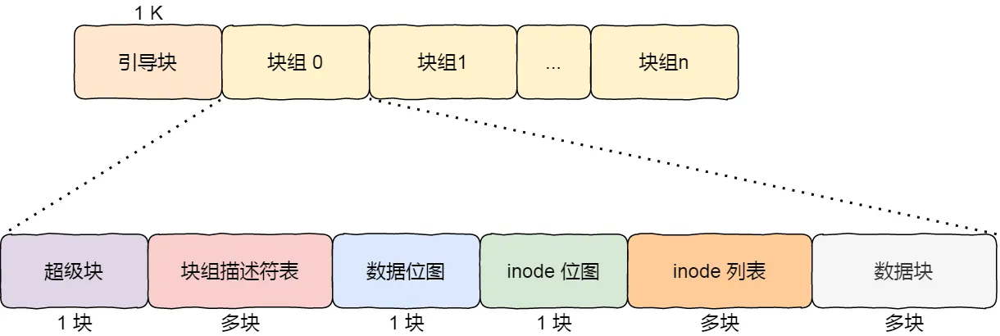
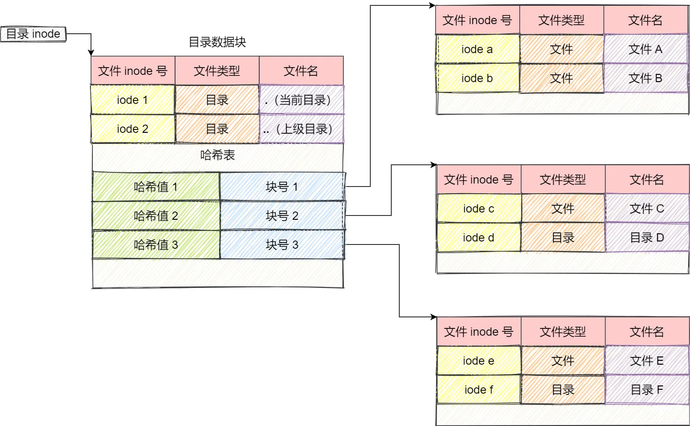
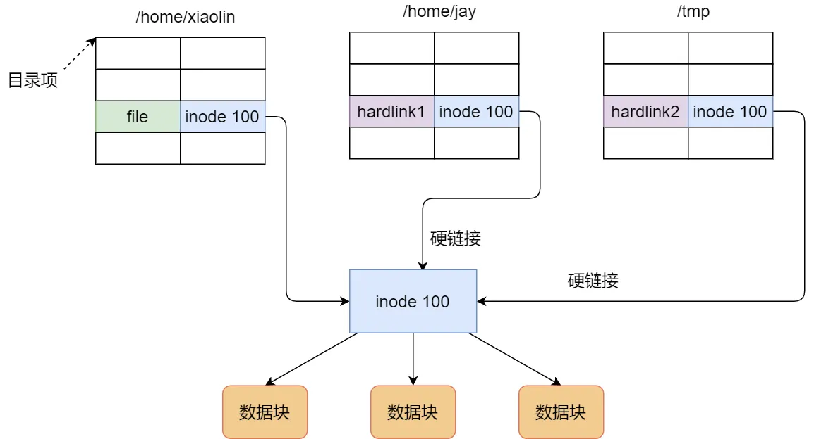
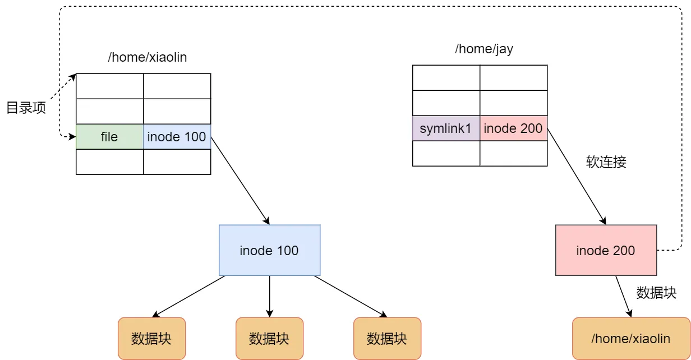
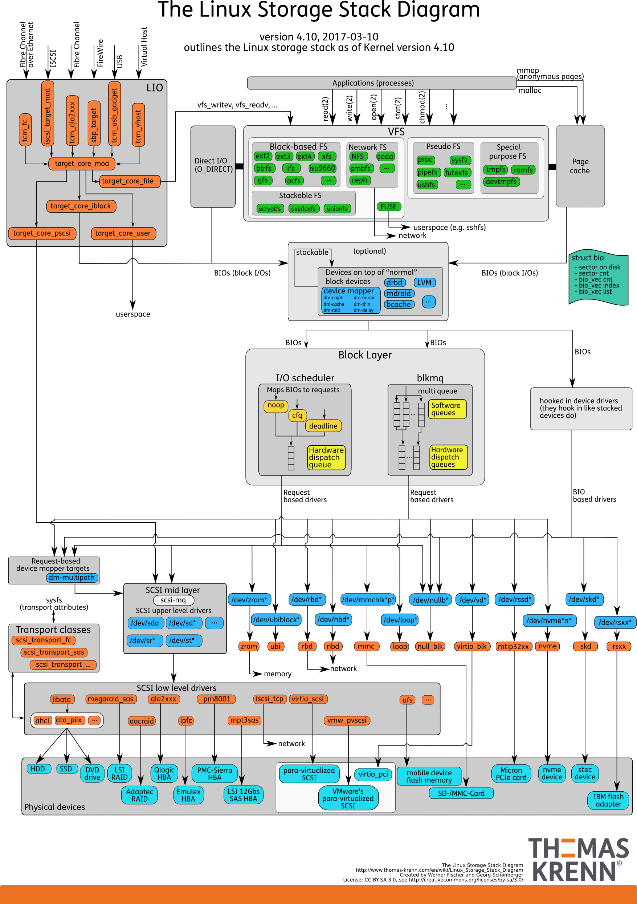

Linux 文件系统
一切皆文件：不仅普通的文件和目录，就连块设备、管道、socket 等，也都是统一交给文件系统管理
数据结构

-
索引节点 index node
即 inode，记录文件的元信息，如 inode 编号、文件大小、访问权限、创建时间、修改时间、数据在磁盘的位置等等
索引节点是文件的唯一标识，它们之间一一对应，也同样都会被存储在硬盘中，所以索引节点同样占用磁盘空间。
-
目录项 directory entry
即 dentry，用来记录文件的名字、索引节点指针以及与其他目录项的层级关联关系。多个目录项关联起来，就会形成目录结构，但它与索引节点不同的是，目录项是由内核维护的一个数据结构，不存放于磁盘，而是==缓存在内存==。
一个文件只有一个 inode，但是可以有多个目录项，即 inode 与 dentry 是一对多
目录也是文件，也是用索引节点唯一标识，和普通文件不同的是，普通文件在磁盘里面保存的是文件数据，而目录文件在磁盘里面保存子目录或文件。
内核会把已经读过的目录用目录项这个数据结构缓存在内存，下次再次读到相同的目录时，只需从内存读就可以，大大提高了文件系统的效率。
磁盘读写最小单位为扇区，大小为 512B，文件系统将多个扇区组成一个逻辑块，每次读写最小单位即逻辑块。linux 中逻辑块大小为 8 个扇区，即 4KB
inode 节点是存储在硬盘上的数据，为了加速文件的访问，通常会将索引结点加载到内存中
磁盘格式化时，通常分为是哪个存储区域
- 超级块：存储文件系统的详细信息，如块个数、块大小、空缺块等。当文件系统挂载时进入内存
- 索引节点区：存储索引节点。当文件被访问时进入内存
- 数据块区：存储文件或目录数据
虚拟文件系统
VFS 定义了一组所有文件系统都支持的数据结构和标准接口

文件系统的基本操作单位是数据块。
- 当用户进程从文件读取 1 个字节大小的数据时，文件系统则需要获取字节所在的数据块，再返回数据块对应的用户进程所需的数据部分。
- 当用户进程把 1 个字节大小的数据写进文件时，文件系统则找到需要写入数据的数据块的位置，然后修改数据块中对应的部分，最后再把数据块写回磁盘。
文件使用
打开了一个文件后，操作系统会跟踪进程打开的所有文件。即为每个进程维护一个打开文件表，表中每一项表示文件描述符，即 文件描述符 是打开文件的标识
表中维护打开文件的状态和信息：
- 文件指针：上次读写位置，对打开文件的某个进程来说是唯一的
- 文件打开计数器：文件关闭时，操作系统必须重用其打开文件表条目，否则表内空间不够用。多个进程可能打开同一个文件，所以系统在删除打开文件条目之前，必须等待最后一个进程关闭文件，该计数器跟踪打开和关闭的数量，当该计数为 0 时，系统关闭文件，删除该条目
- 文件磁盘位置：绝大多数文件操作都要求系统修改文件数据，该信息保存在内存中，以免每个操作都从磁盘中读取
- 访问权限：每个进程打开文件都需要有一个访问模式（创建、只读、读写、添加等），该信息保存在进程的打开文件表中，以便操作系统能允许或拒绝之后的 I/O 请求
文件存储
连续空间存放
文件存放在磁盘「连续的」物理空间中。这种模式下，文件的数据都是紧密相连，读写效率很高，一次磁盘寻道可以读出整个文件
有「磁盘空间碎片」和「文件长度不易扩展」的缺陷。
非连续空间存放
链表方式
- 隐式链表：文件头包含 “第一块” 和 “最后一块” 的位置，每个数据块留出一个指针空间，存放下一个数据块的位置
- 无法直接访问数据块，只能通过指针顺序访问，数据块指针也消耗了一定的存储空间
- 稳定性差，指针丢失或损坏会导致文件数据的丢失
- 显示链表：把用于链接文件各数据块的指针，显式地存放在内存的一张链接表（**文件分配表 File Allocation Table，FAT **）中。该表在整个磁盘仅设置一个，每个表项存放链接指针，指向下一个数据块号
- 由于整个表存放在内存中，不适于大磁盘
索引方式
为每个文件创建一个「索引数据块」，里面存放的是指向文件数据块的指针列表，文件头需要包含指向「索引数据块」的指针
创建文件时，索引块的所有指针都设为空。当首次写入第 i 块时，先从空闲空间中取得一个块，再将其地址写到索引块的第 i 个条目。
- 存储索引带来开销
- 文件很大时，一个索引数据块可能放不下索引信息
一个索引数据块的索引信息用完了，就可以通过指针的方式，找到下一个索引数据块的信息
解决方式：
- 链式索引块：在索引数据块留出一个存放下一个索引数据块的指针，一个索引数据块的索引信息用完了，就可以通过指针的方式，找到下一个索引数据块的信息
- 多级索引块：通过一个索引块存放多个索引数据块（类似多级页表）
unix 文件系统

- 如果存放文件所需的数据块小于 10 块，则采用直接查找的方式；
- 如果存放文件所需的数据块超过 10 块，则采用一级间接索引方式；
- 如果前面两种方式都不够存放大文件，则采用二级间接索引方式；
- 如果二级间接索引也不够存放大文件，这采用三级间接索引方式；
方案就用在了 Linux Ext 2/3 文件系统里，虽然解决大文件的存储，但是对于大文件的访问，需要大量的查询，效率比较低。
Ext 4 做了一定的改变
空闲空间管理
空闲表法
空闲表法就是为所有空闲空间建立一张表，表内容包括空闲区的第一个块号和该空闲区的块个数。这个方式是连续分配的

- 如果存储空间中有着大量的小的空闲区，则空闲表变得很大，这样查询效率会很低
空闲链表法
使用「链表」的方式来管理空闲空间，每一个空闲块里有一个指针指向下一个空闲块
- 不能随机访问，工作效率低，不适合大文件系统，会使空闲表或空闲链表太大
位图法
位图是利用二进制的一位来表示磁盘中一个盘块的使用情况，磁盘上所有的盘块都有一个二进制位与之对应。
Linux 文件系统就采用了位图的方式来管理空闲空间，不仅用于数据空闲块的管理，还用于 inode 空闲块的管理
文件系统结构
Linux Ext2 整个文件系统的结构和块组的内容，文件系统都由大量块组组成，在硬盘上相继排布：

- 超级块，包含的是文件系统的重要信息，比如 inode 总个数、块总个数、每个块组的 inode 个数、每个块组的块个数等等
- 块组描述符，包含文件系统中各个块组的状态，比如块组中空闲块和 inode 的数目等，每个块组都包含了文件系统中「所有块组的组描述符信息」
- 数据位图和 inode 位图， 用于表示对应的数据块或 inode 是空闲的，还是被使用中
- inode 列表，包含了块组中所有的 inode，inode 用于保存文件系统中与各个文件和目录相关的所有元数据。
- 数据块，包含文件的有用数据。
超级块和块组描述符表，都是全局信息，每个块组都保留，重复信息
- 如果系统崩溃破坏了超级块或块组描述符，有关文件系统结构和内容的所有信息都会丢失。如果有冗余的副本，该信息是可能恢复的。
- 通过使文件和管理数据尽可能接近，减少了磁头寻道和旋转，这可以提高文件系统的性能。
目录块存储
普通文件的块里面保存的是文件数据，而目录文件的块里面保存的是目录里面一项一项的文件信息。

Linux 系统的 ext 文件系统就是采用了哈希表，来保存目录的内容。对文件名进行哈希计算，把哈希值保存起来。查找非常迅速，插入和删除也较简单
目录查询是通过在磁盘上反复搜索完成，需要不断地进行 I/O 操作，开销较大。所以，为了减少 I/O 操作，把当前使用的文件目录缓存在内存，以后要使用该文件时只要在内存中操作，从而降低了磁盘操作次数，提高了文件系统的访问速度。
硬链接
多个目录项中的 索引节点 指向同一个文件，即指向同一个 inode
inode 不能跨文件系统，每个文件系统有各自的 inode 数据结构和列表
只有删除文件的所有硬链接以及源文件，系统才会彻底删除该文件

软链接
相当于重新创建一个文件，有独立的 inode，但是文件内容是另一个文件的路径。访问软链接的时候，实际上相当于访问到了另外一个文件。
可以跨文件系统，即使目标文件被删除，链接文件还在，只是找不到指向文件

磁盘
Linux 中，磁盘实际上是作为一个块设备来管理的，也就是以块为单位读写数据，并且支持随机读写。每个块设备都会被赋予两个设备号，分别是主、次设备号。主设备号用在驱动程序中，用来区分设备类型；而次设备号则是用来给多个同类设备编号。
存储介质
机械磁盘
硬盘驱动器（Hard Disk Driver）。主要由盘片和读写磁头组成，数据就存储在盘片的环状磁道中。在读写数据前，需要移动读写磁头，定位到数据所在的磁道，然后才能访问数据。
对于连续 I/O，不需要磁道寻址，可以获得最佳性能。
对于随机 I/O，需要不停地移动磁头，来定位数据位置，所以读写速度就会比较慢
机械磁盘的最小读写单位是扇区，一般大小为 512 字节。
固态磁盘
固态磁盘（Solid State Disk）由固态电子元器件组成。固态磁盘不需要磁道寻址，所以，不管是连续 I/O，还是随机 I/O 的性能，都比机械磁盘要好得多。
对固态磁盘来说，虽然它的随机性能比机械硬盘好很多，但同样存在“先擦除再写入”的限制。随机读写会导致大量的垃圾回收，所以相对应的，随机 I/O 的性能比起连续 I/O 来，也还是差了很多。
而固态磁盘的最小读写单位是页，通常大小是 4KB、8KB 等。
无论固态或者机械，连续 I/O 还可以通过预读的方式，来减少 I/O 请求的次数，这也是其性能优异的一个原因。很多性能优化的方案，也都会从这个角度出发，来优化 I/O 性能。
文件系统会把连续的扇区或页，组成逻辑块，然后以逻辑块作为最小单元来管理数据。常见的逻辑块的大小是 4KB，也就是说，连续 8 个扇区，或者单独的一个页，都可以组成一个逻辑块。
接口
IDE（Integrated Drive Electronics）、SCSI（Small Computer System Interface） 、SAS（Serial Attached SCSI） 、SATA（Serial ATA） 、FC（Fibre Channel）
架构
RAID
RAID（Redundant Array of Independent Disks）多块磁盘组合成一个逻辑磁盘，构成冗余独立磁盘阵列，从而可以提高数据访问的性能，并且增强数据存储的可靠性。
根据容量、性能和可靠性需求的不同，RAID 一般可以划分为多个级别，如 RAID0、RAID1、RAID5、RAID10 等。
RAID0 有最优的读写性能，但不提供数据冗余的功能。而其他级别的 RAID，在提供数据冗余的基础上，对读写性能也有一定程度的优化。
集群
把这些磁盘组合成一个网络存储集群，再通过 NFS、SMB、iSCSI 等网络存储协议，暴露给服务器使用。
通用块层
Linux 通过一个统一的通用块层，来管理各种不同的块设备。其实是处在文件系统和磁盘驱动中间的一个块设备抽象层
- 第一个功能跟虚拟文件系统的功能类似。向上，为文件系统和应用程序，提供访问块设备的标准接口；向下，把各种异构的磁盘设备抽象为统一的块设备，并提供统一框架来管理这些设备的驱动程序。
- 第二个功能，通用块层还会给文件系统和应用程序发来的 I/O 请求排队，并通过重新排序、请求合并等方式，提高磁盘读写的效率。
四种 I/O 调度算法
- NONE ，完全不使用任何 I/O 调度器，对文件系统和应用程序的 I/O 其实不做任何处理，常用在虚拟机中（此时磁盘 I/O 调度完全由物理机负责）。
- NOOP ，是最简单的一种 I/O 调度算法。它实际上是一个先入先出的队列，只做一些最基本的请求合并，常用于 SSD 磁盘。
- CFQ（Completely Fair Scheduler），也被称为完全公平调度器，是现在很多发行版的默认 I/O 调度器，它为每个进程维护了一个 I/O 调度队列，并按照时间片来均匀分布每个进程的 I/O 请求。
- DeadLine 调度算法，分别为读、写请求创建了不同的 I/O 队列，可以提高机械磁盘的吞吐量，并确保达到最终期限（deadline）的请求被优先处理。DeadLine 调度算法，多用在 I/O 压力比较重的场景，比如数据库等。
文件 IO
缓冲与非缓冲 IO
根据「是否利用标准库缓冲」
-
缓冲 IO：即利用的是标准库的缓存实现文件的加速访问，减少系统调用次数
-
非缓冲 IO：直接通过系统调用访问文件，不经过标准库缓存
直接与非直接 I/O
根据是「否利用操作系统的缓存」
系统调用后，会把用户数据拷贝到内核中缓存起来，这个内核缓存空间也就是「页缓存」，只有当缓存满足某些条件的时候，才发起磁盘 I/O 的请求。
- 直接 I/O，不会发生内核缓存和用户程序之间数据复制，而是直接经过文件系统访问磁盘。
- 非直接 I/O，读操作时，数据从内核缓存中拷贝给用户程序，写操作时，数据从用户程序拷贝给内核缓存，再由内核决定什么时候写入数据到磁盘。
阻塞与非阻塞 I/O
阻塞 I/O，当用户程序执行 read ，线程会被阻塞，一直等到内核数据准备好，并把数据从内核缓冲区拷贝到应用程序的缓冲区中，当拷贝过程完成，read 才会返回。阻塞等待的是「内核数据准备好」和「数据从内核态拷贝到用户态」这两个过程
非阻塞 I/O，非阻塞的 read 请求在数据未准备好的情况下立即返回，可以继续往下执行，此时应用程序不断轮询内核，直到数据准备好，内核将数据拷贝到应用程序缓冲区，read 调用才可以获取到结果。
同步与异步 I/O
无论是阻塞 I/O、非阻塞 I/O，还是基于非阻塞 I/O 的多路复用都是同步调用。因为它们在 read 调用时，内核将数据从内核空间拷贝到应用程序空间，过程都是需要等待的，也就是说这个过程是同步的，如果内核实现的拷贝效率不高，read 调用就会在这个同步过程中等待比较长的时间。
异步 I/O 是「内核数据准备好」和「数据从内核态拷贝到用户态」这两个过程都不用等待。发起 aio_read 之后，就立即返回，内核自动将数据从内核空间拷贝到应用程序空间，最后通知应用程序处理
I/O 栈

- 文件系统层，包括虚拟文件系统和其他各种文件系统的具体实现。它为上层的应用程序，提供标准的文件访问接口；对下会通过通用块层，来存储和管理磁盘数据。
- 通用块层，包括块设备 I/O 队列和 I/O 调度器。它会对文件系统的 I/O 请求进行排队，再通过重新排序和请求合并，然后才要发送给下一级的设备层。
- 设备层，包括存储设备和相应的驱动程序，负责最终物理设备的 I/O 操作。
存储系统的 I/O ，通常是整个系统中最慢的一环。所以， Linux 通过多种缓存机制来优化 I/O 效率。比方说，为了优化文件访问的性能，会使用页缓存、索引节点缓存、目录项缓存等多种缓存机制，以减少对下层块设备的直接调用。
为了优化块设备的访问效率，会使用缓冲区，来缓存块设备的数据